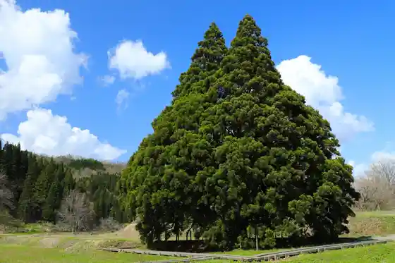
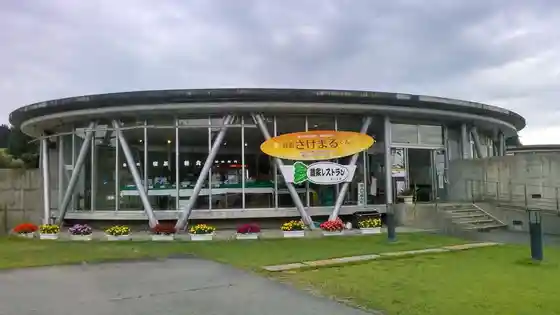
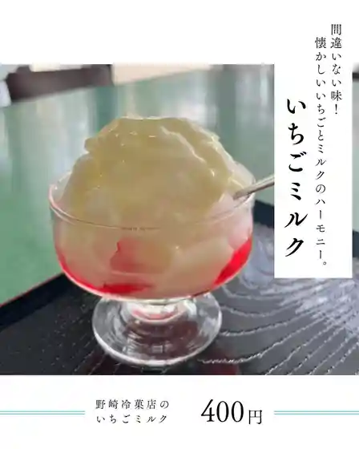

Kosugi no Osugi (Totoro no Ki)
Sakegawa, Yamagata · 0233-55-2111 · Official / source link

Hane Sawa Onsen
Sakegawa, Yamagata · 0233-55-2111 · Official / source link
Sanchoku Sakemarukun
Sakegawa, Yamagata · 0233-55-4460 · Official / source link

Nozaki Reika Mise
Sakegawa, Yamagata · 0233-55-2074 · Official / source link

Kome Marsh
Sakegawa, Yamagata · 0233-55-2111 · Official / source link
Sakegawa Eko Park
Sakegawa, Yamagata · 0233-55-4455 · Official / source link
Maboroshi no Taki Gun
Sakegawa, Yamagata · 0233-55-2111 · Official / source link
Niwa Gassan Gatsu Kura In (Tendai Shu) / Saijo Sanju San Kannon Dai 33 Ban Niwa Gatsu Kannon
Sakegawa, Yamagata · 0233-55-2343 · Official / source link
Sakegawa Eko Park / Kuri no Ki Oto Campground
Sakegawa, Yamagata · 0233-55-4455 · Official / source link
Sakegawa Eko Park / Kakushu Taiken Menyu (Tsunen)
Sakegawa, Yamagata · 0233-55-4455 · Official / source link
Fudo Taki (Yachi Fudo Taki)
Sakegawa, Yamagata · 0233-55-2111 · Official / source link
Sake no Ko Park
Sakegawa, Yamagata · 0233-55-4460 · Official / source link
Sakegawa Eko Park / Kakushu Taiken Menyu (Toki)
Sakegawa, Yamagata · 0233-55-4455 · Official / source link
Sakegawa Torekkingu
Sakegawa, Yamagata · 0233-55-2111 · Official / source link
Kago Yama no Dai Katsura Go Kyodai
Sakegawa, Yamagata · 0233-55-2111 · Official / source link
Yozo Numa
Sakegawa, Yamagata · 0233-55-2111 · Official / source link
Tokuro Sawa no Sennen Katsura
Sakegawa, Yamagata · 0233-55-2111 · Official / source link